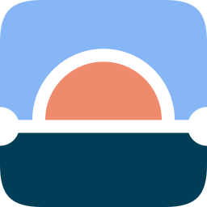
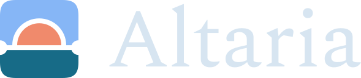
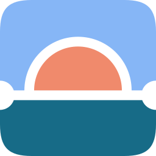
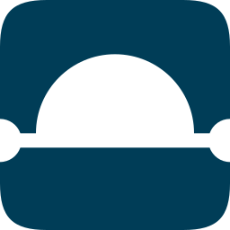

Altaria · Logo kit · November 2026
Altaria logo
A square ticket whose tear is the horizon, with the sun rising on it.
Use the files in brand/final/. They are drawn and outlined once, so never redraw the mark or retype the name.
Colourways

-color

#061925 and near-black surfaces: the site in dark mode. The stub turns teal. -dark
-ink
-whiteClear space
Keep R clear on every side of the lockup and of the symbol. R is the sun's radius, 0.28 × the symbol's height: about 9 px round a 32 px lockup.
Size
| File | Screen | |
|---|---|---|
| Lockup | 24 px tall (110 px wide) or more | 6 mm tall or more |
| Symbol | above 32 px | above 9 mm |
| Small cut | 16 to 32 px; sharpest at exactly 16 or 32 | 5 to 9 mm |
At 32 px and below, switch to altaria-symbol-small-*. It is drawn on a 16 px grid with bigger notches, so the tear lands on whole pixels and the 16 px icon still reads as a ticket. Never use either symbol below 16 px.
Colour
#86B6F6RGB 134 182 246 · the sky, in colour and dark#F08A6CRGB 240 138 108 · the sun only, never text#003D57RGB 0 61 87 · stub, wordmark, one colour#176B87RGB 23 107 135 · the stub on night#D7E5F1RGB 215 229 241 · the wordmark on night#EEF5FFRGB 238 245 255 · light surface, icon tiles#061925RGB 6 25 37 · dark surface#64C3E2RGB 100 195 226 · site accent on night, not in the logoEvery version uses three colours at most, all flat. The wordmark is 10.6:1 on ice and 13.9:1 on night. For print, match the colours from a proof rather than converting them automatically.
Wordmark
- Altaria in Spectral Regular (400), sentence case, with the font's own kerning and tracking of -0.005 em, outlined to paths in every file.
- The symbol is 1.42 × the cap height and centred on it. The gap to the wordmark's origin is 0.36 × the symbol's height.
- Ink on light, night ink on night, or one colour. Spectral is by Production Type, under the SIL Open Font License.
Don't
- Retype the name, or set it in another font, weight or case. Use the lockup file.
- Recolour any part, or use coral for anything but the sun.
- Stretch, rotate, outline, or add shadows, glows or gradients.
- Put the colour or dark version on photos, mid-tones or sky blue. Use white, or an ice tile with R of padding.
- Move the symbol and wordmark, change the gap, or add words such as "ai".
- Use the full symbol at 32 px or below, or the small cut above 32 px.
Files
symbol/altaria-symbol-{color,dark,ink,white}.svgabove 32 pxsymbol/altaria-symbol-small-{…}.svg16 to 32 pxlockup/altaria-lockup-{…}.svgpng/the same on transparent: symbols 256 and 512 px (@2x), lockups 128 and 256 px tallicons/favicon.svg(its stub turns teal in dark browser UI),favicon.ico(16, 32, 48), PNG favicons,apple-touch-icon.png, app icons forsite.webmanifest, andhead-snippet.html
On the site: the header takes altaria-lockup-color.svg and -dark.svg; copy icons/ to the site root and paste head-snippet.html into <head>.